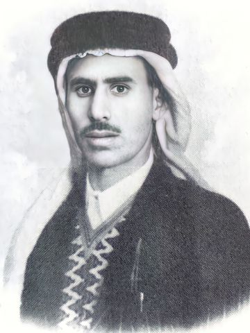

Mohammed Abdulaziz Al-Qatami
died 1939
Life in brief
Nakhuda Mohammed bin Abdulaziz Al-Qatami commanded the family boom Al-Hisan to India before he was appointed to Kuwait's sea customs, and his nephew Sager remembered him as the first head of the coast guard in 1938. He was killed in the Majlis events of March 1939, and Alan Villiers wrote that he was well known to all the nakhudas.
Life facts
- Died
- 10 March 1939, shot during the Legislative Council crisis (British Political Agent's report C/95, 12 March 1939)
- Sea
- A capable nakhuda who commanded the family's Boom Al-Hisan; Kuwaiti nakhudas' logs record seeing him in Indian ports between 1936 and 1938. He was then appointed to Kuwait's sea customs, which ended his voyages
- Majlis year
- Better known as a political figure linked to the Majlis of 1938. He is remembered as the first Kuwaiti martyr for freedom, killed on 10 March 1939 in the crisis that followed the dissolution of the Legislative Council
- Public role
- In 1938 he headed the force organised to guard the coast (Ibrahim Al-Khalidi, drawing on Khalid Al-Adsani's memoir of the 1938 Council)
- Alan Villiers
- Alan Villiers wrote that Mohamed Kitami, «a nakhoda who had been given a shore job by the elected council of state», was killed in the 1939 riot in Kuwait when the guards fired a warning and he «jumped in front of a bullet». He adds that Mohammed was well known to all the nakhodas, a friend of Ali Al-Najdi, and «a favourite brother» to Abdulla (Alan Villiers, Sons of Sindbad, 2006 edition, pages 233, 234, 269, 270 and 311)
- Source
- Nawakhidhat Al-Safar Al-Shira'i fi Al-Kuwait, Dr Yacoub Yousef Al-Hijji, 2004, posted by alghanim_history, 12 July 2020
Family
- Father
- Abdulaziz Abdulwahab Abdulaziz Al-Qatami
- Mother
- Aisha Al-Oraifan
- Spouse
- Al-Jassim
- Children
- Amna Mohammed Al-Qatami